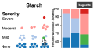

I am a third year PhD student in the Computer Science and Engineering Department at the University of Washington. I am advised by Jeffrey Heer from the Interactive Data Lab. I received my undergraduate degree from Harvey Mudd College. I am interested in how developers write and understand their software, and how visualization techniques can be applied to improve program understanding, debugging, and authoring.
Recent Publications

Supporting Patient-Provider Collaboration to Identify Individual Triggers using Food and Symptom Journals.
ACM Computer-Supported Cooperative Work (CSCW), 2017.
|
PDF
Visual Debugging Techniques for Reactive Data Visualization.
Eurographics Conference on Visualization (EuroVis), 2016.
|
PDF